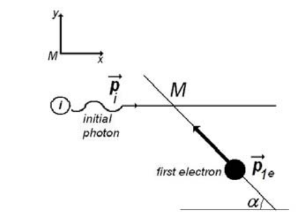
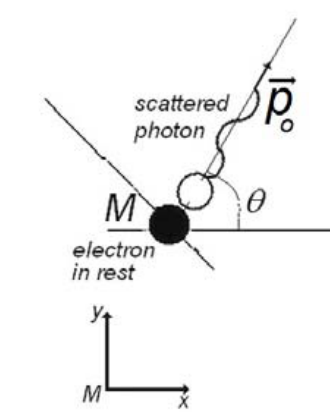
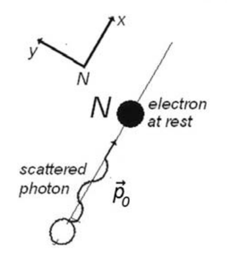
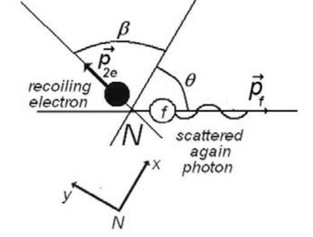

원문: Romanian Master of Physics 2013, Theoretical Problem No. 2 – Solution. 원문 해설지는 문제 본문을 먼저 싣고 이어서 풀이를 싣는다. 원문의 “moment”는 운동량(momentum)을 뜻한다.
전자 저장 링(electron storage ring)에는 가속기에서 만들어져 적절한 자기장 속에서 회전하는 높은 에너지의 전자들이 돌고 있다. X선 광자를 저장 링에 저장된 전자와 충돌하도록 보낸다. 이때 일어나는 현상을 역 콤프턴 산란(inverse Compton scattering)이라 한다.
파장 $\lambda_i$인 광자가 움직이는 자유 전자에 의해 산란된다. 그 결과 전자는 멈추고, 생겨난 파장 $\lambda_0$의 광자는 입사 광자의 방향에 대해 각 $\theta = 60^\circ$로 산란된다. 이 광자는 다시 정지해 있는 두 번째 자유 전자에 의해 산란된다. 이 두 번째 산란 과정에서 파장 $\lambda_f = 1{,}25\times10^{-10}\,m$인 광자가 파장 $\lambda_0$인 광자의 방향에 대해 각 $\theta = 60^\circ$로 나온다.
과정 동안의 광자와 전자를 나타내기 위해 다음 표기를 사용하라.
| 처음 광자 | 첫 번째 산란 후의 광자 | 마지막 광자 | 충돌 전 첫 번째 전자 | 충돌 후 첫 번째 전자 | 충돌 전 두 번째 전자 | 충돌 후 두 번째 전자 | ||
|---|---|---|---|---|---|---|---|---|
| 운동량 | $\vec p_i$ | $\vec p_0$ | $\vec p_f$ | 운동량 | $\vec p_{1e}$ | $0$ | $0$ | $\vec p_{2e}$ |
| 에너지 | $E_i$ | $E_0$ | $E_f$ | 에너지 | $E_{1e}$ | $E_{0e}$ | $E_{0e}$ | $E_{2e}$ |
| 파장 | $\lambda_i$ | $\lambda_0$ | $\lambda_f$ | 속도 | $\vec v_{1e}$ | $0$ | $0$ | $\vec v_{2e}$ |
다음 상수들이 주어진다.
$h = 6{,}6\times10^{-34}\,J\cdot s$ — 플랑크 상수(Planck’s constant)
$m_0 = 9{,}1\times10^{-31}\,kg$ — 전자의 정지 질량
$c = 3{,}0\times10^8\,m/s$ — 진공에서의 빛의 속력
1.a. 첫 번째 충돌 전후의 전자와 광자의 운동량을 표시한 간단한 그림을 그려라. 사용한 좌표계를 분명히 밝혀라.
1.b. 첫 번째 충돌에 관여하는 전자의 에너지와 운동량을 전자의 처음 속도 $\vec v_{1e}$와 정지 질량 $m_0$의 함수로 나타내라.
1.c. 첫 번째 충돌 후 광자의 에너지와 파장을 처음 광자의 파장 $\lambda_i$, 산란각 $\theta$, $\Lambda = h/(m_0\cdot c)$의 함수로 나타내라.
2.a. 두 번째 충돌 전후의 전자와 광자의 운동량을 표시한 간단한 그림을 그려라. 사용한 좌표계를 분명히 밝혀라.
2.b. 두 번째 충돌 후 광자의 에너지와 파장을 충돌 전 광자의 파장 $\lambda_0$, 산란각 $\theta$, $\Lambda = h/(m_0\cdot c)$의 함수로 나타내라.
2.c. 두 번째 충돌 후 전자의 운동 에너지 $\left(T_2 = E_{2e}-E_{0e}\right)$와 운동량 $p_{2e}$를 충돌 후 광자의 파장 $\lambda_f$, $m_0$, $c$, $h$의 함수로 나타내라.
주어진 물리 상수들의 값과 $\lambda_f$, $\theta$의 수치를 이용하여 다음의 식과 수치를 구하라.
3.a. 처음 전자의 드브로이 파장(de Broglie wavelength);
3.b. 처음 광자의 에너지와 진동수;
3.c. 충돌 후 두 번째 전자의 속력;
3.d. 각 충돌 과정 후 광자 파장의 변화.
1.a. 그림 1은 광자의 첫 번째 산란 전의 상황을 보여 준다.


1.b. 충돌 전 전자와 광자의 운동량 방향 사이의 각을 $\alpha$로 나타낸다.
처음 광자를 나타내기 위해 그 운동량 $\vec p_i$와 에너지 $E_i$를 사용한다.
\[\begin{cases}\left|\vec p_i\right| = \dfrac{h}{\lambda_i} = \dfrac{h\cdot f_i}{c}\\[3mm] E_i = h\cdot f_i\end{cases}\tag{1}\] \[f_i = \frac{c}{\lambda_i}\tag{2}\]는 처음 광자의 진동수이다.
처음에 움직이는 자유 전자의 경우, 운동량 $\vec p_{1e}$와 에너지 $E_{oe}$는 다음과 같다.
\[\begin{cases}\vec p_{1e} = m\cdot\vec v_{1e} = \dfrac{m_0\cdot\vec v_{1e}}{\sqrt{1-\beta^2}}\\[3mm] E_{1e} = m\cdot c^2 = \dfrac{m_0\cdot c^2}{\sqrt{1-\beta^2}}\end{cases}\tag{3}\]여기서 $m_0$은 전자의 정지 질량, $m$은 움직이는 전자의 질량이다. 늘 그렇듯이 $\beta = \dfrac{v_{1e}}{c}$이다. 첫 번째 전자의 드브로이 파장은 다음과 같다.
\[\lambda_{1e} = \frac{h}{p_{1e}} = \frac{h\cdot}{m_0\cdot v_{1e}}\sqrt{1-\beta^2}\tag{4}\]1.c. 광자가 산란된 후의 상황은 그림 2와 같다.
산란된 광자를 나타내기 위해 그 운동량 $\vec p_0$와 에너지 $E_0$를 사용한다.
\[\begin{cases}\left|\vec p_o\right| = \dfrac{h}{\lambda_o} = \dfrac{h\cdot f_o}{c}\\[3mm] E_o = h\cdot f_o\end{cases}\tag{5}\]여기서
\[f_o = \frac{c}{\lambda_0}\tag{6}\]는 산란된 광자의 진동수이다.
산란 후 (정지해 있는) 전자의 운동량 크기는 0이고, 에너지는 $E_{0e}$이다. 충돌 후 전자의 질량은 $m_0$, 즉 정지 상태 전자의 질량이다. 따라서
\[E_{0e} = m_0\cdot c^2\tag{7}\]처음 움직이던 전자의 운동량을 구하기 위해 운동량 보존과 에너지 보존 법칙을 쓸 수 있다. 즉
\[\vec p_i+\vec p_{1e} = \vec p_0\tag{8}\]그리고
\[E_i+E_{1e} = E_0+E_{0e}\tag{9}\]그림 1과 2의 기준틀을 사용하면, 충돌에서 $Ox$ 방향의 운동량 보존은
\[\frac{h\cdot f_i}{c}+m\cdot v_{1e}\cdot\cos\alpha = \frac{h\cdot f_0}{c}\cos\theta\tag{10}\]이고, $Oy$ 방향의 운동량 보존은
\[m\cdot v_{1e}\cdot\sin\alpha = \frac{h\cdot f_0}{c}\sin\theta\tag{11}\]이다. $\alpha$를 소거하기 위해 마지막 두 식을 다음과 같이 다시 쓴 뒤
\[\begin{cases}\left(m\cdot v_{1e}\cdot\cos\alpha\right)^2 = \dfrac{h^2\cdot}{c^2}\left(f_0\cdot\cos\theta-f_i\right)^2\\[3mm] \left(m\cdot v_{1e}\cdot\sin\alpha\right)^2 = \left(\dfrac{h\cdot f_0}{c}\sin\theta\right)^2\end{cases}\tag{12}\]더한다. 결과는 다음과 같다.
\[m^2\cdot v_{1e}^2 = \frac{h^2\cdot}{c^2}\left(f_0^2+f_i^2-2f_0\cdot f_i\cdot\cos\theta\right)\tag{13}\]또는
\[\frac{m_0^2\cdot c^2}{1-\left(\dfrac{v_{1e}}{c}\right)^2}\cdot v_{1e}^2 = h^2\cdot\left(f_0^2+f_i^2-2f_0\cdot f_i\cdot\cos\theta\right)\tag{14}\]에너지 보존 (9)는 다음과 같이 다시 쓸 수 있다.
\[m\cdot c^2+h\cdot f_i = m_0\cdot c^2+h\cdot f_0\tag{15}\]또는
\[\frac{m_0\cdot c^2}{\sqrt{1-\left(\dfrac{v_{1e}}{c}\right)^2}} = m_0\cdot c^2+h\cdot\left(f_0-f_i\right)\tag{16}\]마지막 관계식을 제곱하면 다음을 얻는다.
\[\frac{m_0^2\cdot c^4}{1-\left(\dfrac{v_{1e}}{c}\right)^2} = m_0^2\cdot c^4+h^2\cdot\left(f_0-f_i\right)^2+2m_0\cdot h\cdot c^2\cdot\left(f_0-f_i\right)\tag{17}\](17)에서 (14)를 빼면 결과는 다음과 같다.
\[2m_0\cdot c^2\cdot h\cdot\left(f_0-f_i\right)+2h^2\cdot f_i\cdot f_0\cdot\cos\theta-2h^2\cdot f_i\cdot f_0 = 0\tag{18}\]또는
\[\frac{h}{m_0\cdot c}\left(1-\cos\theta\right) = \frac{c}{f_i}-\frac{c}{f_0}\tag{19}\]다음을 사용하면
\[\Lambda = \frac{h}{m_0\cdot c}\tag{20}\]관계식 (19)는 다음과 같이 된다.
\[\Lambda\cdot\left(1-\cos\theta\right) = \lambda_i-\lambda_0\tag{21}\]산란된 광자의 파장은 다음과 같다.
\[\lambda_0 = \lambda_i-\Lambda\cdot\left(1-\cos\theta\right)\tag{22}\]식 (22)는 산란된 광자의 파장이 처음 광자의 파장보다 짧음을 보여 준다. 따라서 산란된 광자의 에너지는 처음 광자의 에너지보다 크다.
\[\begin{cases}\lambda_0 < \lambda_i\\ E_0 > E_i\end{cases}\tag{23}\]2.a. 이제 점 $N$에서 일어나는 두 번째 충돌 과정을 분석하자. 이를 위해 첫 번째 충돌 후 산란된 광자의 방향을 따라 $Ox$축을 잡은 새 기준틀을 생각한다.


그림 3은 두 번째 충돌 전의 상황을, 그림 4는 이 산란 과정 후의 상황을 보여 준다.
2.b. 산란 과정에서 운동량 보존 법칙은 다음을 준다.
\[\begin{cases}\dfrac{h}{\lambda_0} = \dfrac{h}{\lambda_f}\cos\theta+m\cdot v_{2e}\cdot\cos\beta\\[3mm] \dfrac{h}{\lambda_f}\sin\theta-m\cdot v_{2e}\cdot\sin\beta = 0\end{cases}\tag{24}\]미지의 각 $\beta$를 소거하려면 식 (24)를 제곱한 뒤 더해야 한다. 즉
\[\begin{cases}\left(\dfrac{h}{\lambda_0}-\dfrac{h}{\lambda_f}\cos\theta\right)^2 = \left(m\cdot v_{2e}\cdot\cos\beta\right)^2\\[3mm] \left(\dfrac{h}{\lambda_f}\sin\theta\right)^2 = \left(m\cdot v_{2e}\cdot\sin\beta\right)^2\end{cases}\tag{25}\]그리고
\[\left(\frac{h}{\lambda_f}\right)^2+\left(\frac{h}{\lambda_0}\right)^2-\frac{2\cdot h^2}{\lambda_0\cdot\lambda_f}\cos\theta = \left(m\cdot v_{2e}\right)^2\tag{26}\]또는
\[\frac{h^2\cdot c^2}{\lambda_f^2}+\frac{h^2\cdot c^2}{\lambda_0^2}-\frac{2\cdot h^2\cdot c^2}{\lambda_0\cdot\lambda_f}\cos\theta = m^2\cdot c^2\cdot v_{2e}^2\tag{27}\]두 번째 산란 과정에서 에너지 보존 법칙은 다음을 준다.
\[\frac{h\cdot c}{\lambda_0}+m_0\cdot c^2 = \frac{h\cdot c}{\lambda_f}+m\cdot c^2\tag{28}\]또는
\[h^2\cdot c^2\cdot\left(\frac{1}{\lambda_f}-\frac{1}{\lambda_0}\right)^2+m_0^2\cdot c^4+2h\cdot c^3\cdot m_0\cdot\left(\frac{1}{\lambda_f}-\frac{1}{\lambda_0}\right) = \frac{m_0^2\cdot c^4}{1-\left(v_{2e}/c\right)^2}\tag{29}\](29)에서 (27)을 빼면 다음을 얻는다.
\[+\frac{2\cdot h^2\cdot c^2}{\lambda_0\cdot\lambda_f}\cos\theta-\frac{2\cdot h^2\cdot c^2}{\lambda_0\cdot\lambda_f}+2h\cdot c^3\cdot m_0\cdot\left(\frac{1}{\lambda_f}-\frac{1}{\lambda_0}\right) = 0\tag{30}\]즉
\[\begin{cases}\dfrac{h}{m_0\cdot c}\cdot\left(1-\cos\theta\right) = \lambda_f-\lambda_0\\[3mm] \lambda_f-\lambda_0 = \Lambda\cdot\left(1-\cos\theta\right)\end{cases}\tag{31}\]결론적으로
\[\begin{cases}\lambda_f > \lambda_0\\ E_f < E_0\end{cases}\tag{32}\]다음과 같이 쓴 (31)과
\[\lambda_f = \lambda_0+\Lambda\cdot\left(1-\cos\theta\right)\tag{33}\]다음과 같이 쓴 (22)를 비교하면
\[\lambda_i = \lambda_0+\Lambda\cdot\left(1-\cos\theta\right)\tag{34}\]다음을 얻는다.
\[\lambda_i = \lambda_f\tag{35}\]2.c. (26)을 고려하면, 두 번째 충돌 후 전자의 운동량은 다음과 같다.
\[p_{2e} = h\sqrt{\frac{1}{\lambda_f^2}+\frac{1}{\lambda_0^2}-\frac{2\cdot\cos\theta}{\lambda_f\cdot\lambda_0}}\tag{36}\]또는 (33)을 고려하면 운동량은 다음과 같이 다시 쓸 수 있다.
\[p_{2e} = h\sqrt{\frac{1}{\lambda_f^2}+\frac{1}{\left(\lambda_f-\Lambda\left(1-\cos\theta\right)\right)^2}-\frac{2\cdot\cos\theta}{\lambda_f\cdot\left(\lambda_f-\Lambda\left(1-\cos\theta\right)\right)}}\tag{37}\]산란 후 두 번째 전자의 드브로이 파장의 식은 다음과 같다.
\[\lambda_{2e} = 1\Bigg/\left(\sqrt{\frac{1}{\lambda_f^2}+\frac{1}{\left(\lambda_f-\Lambda\left(1-\cos\theta\right)\right)^2}-\frac{2\cdot\cos\theta}{\lambda_f\cdot\left(\lambda_f-\Lambda\left(1-\cos\theta\right)\right)}}\right)\tag{38}\](28)로부터
\[\frac{h\cdot c}{\lambda_0} = \frac{h\cdot c}{\lambda_f}+T_2\tag{39}\]즉
\[T_2 = h\cdot c\cdot\left(\frac{1}{\lambda_0}-\frac{1}{\lambda_f}\right)\tag{40}\]3.a. 관계식 (13)은 다음과 같이 쓸 수 있다.
\[p_{1e} = h\sqrt{\frac{1}{\lambda_i^2}+\frac{1}{\lambda_0^2}-\frac{2\cdot\cos\theta}{\lambda_i\cdot\lambda_0}}\tag{41}\]또는 (34)와 (35)를 고려하면
\[p_{1e} = h\sqrt{\frac{1}{\lambda_f^2}+\frac{1}{\left(\lambda_f-\Lambda\left(1-\cos\theta\right)\right)^2}-\frac{2\cdot\cos\theta}{\lambda_f\cdot\left(\lambda_f-\Lambda\left(1-\cos\theta\right)\right)}}\tag{42}\]따라서 산란 전 첫 번째 전자의 드브로이 파장의 식은 다음과 같다.
\[\lambda_{1e} = 1\Bigg/\left(\sqrt{\frac{1}{\lambda_f^2}+\frac{1}{\left(\lambda_f-\Lambda\left(1-\cos\theta\right)\right)^2}-\frac{2\cdot\cos\theta}{\lambda_f\cdot\left(\lambda_f-\Lambda\left(1-\cos\theta\right)\right)}}\right)\tag{43}\]문제의 조건에서 (43)은 다음과 같이 된다.
\[\lambda_{1e} = 1\Bigg/\left(\sqrt{\frac{1}{\lambda_f^2}+\frac{1}{\left(\lambda_f-\dfrac\Lambda2\right)^2}-\frac{1}{\lambda_f\cdot\left(\lambda_f-\dfrac\Lambda2\right)}}\right)\tag{44}\]$\lambda_f$와 $\Lambda$의 값이 다음과 같이 알려져 있으므로
\[\begin{cases}\lambda_f = \lambda_i = 1{,}25\times10^{-10}\,m\\[2mm] \Lambda = \dfrac{6{,}6\times10^{-34}}{9{,}1\times10^{-31}\cdot3{,}0\times10^8}\,m = 2{,}41\times10^{-12}\,m = 0{,}02\times10^{-10}\,m\end{cases}\tag{45}\](33)으로부터
\[\lambda_0 = \lambda_f-\Lambda\cdot\left(1-\cos\theta\right) = \lambda_f-\frac\Lambda2\tag{46}\]또는
\[\lambda_0 = 1{,}24\times10^{-10}\,m\tag{47}\]산란 전 첫 번째 전자의 드브로이 파장의 수치는 다음과 같다.
\[\lambda_{1e} = 10^{-10}\Bigg/\left(\sqrt{\frac{1}{1{,}25^2}+\frac{1}{1{,}24^2}-\frac{1}{1{,}25\times1{,}24}}\right)m \cong 1{,}25\times10^{-10}\,m\tag{48}\]산란 후 두 번째 전자의 드브로이 파장 $\lambda_{2e}$도 같음이 분명하다.
\[\lambda_{1e} = \lambda_{2e}\tag{49}\]3.b. $\lambda_f = \lambda_i$이므로, 첫 번째 산란 전 첫 번째 광자의 에너지는 다음과 같이 표현된다.
\[E_i = \frac{h\cdot c}{\lambda_i} = \frac{h\cdot c}{\lambda_f}\tag{50}\]그 수치는 다음과 같다.
\[E_i = \frac{h\cdot c}{\lambda_i} = \frac{6{,}6\times10^{-34}\cdot3{,}0\times10^8}{1{,}25\times10^{-10}} \cong 1{,}58\times10^{-15}\,J = 9{,}9\,KeV\tag{51}\]첫 번째 산란 전 첫 번째 광자의 진동수 $f_i$는 다음과 같이 표현된다.
\[f_i = \frac{c}{\lambda_i} = \frac{c}{\lambda_f}\tag{52}\]그 수치는 다음과 같다.
\[f_i = \frac{3\times10^8}{1{,}25\times10^{-10}} \cong 2{,}4\times10^{18}\,Hz\tag{53}\]3.c. (40)을 다음과 같이 쓰면
\[T_2 = T_1 = m\cdot c^2-m_0\cdot c^2 = h\cdot c\cdot\left(\frac{1}{\lambda_0}-\frac{1}{\lambda_f}\right)\tag{54}\]다음을 얻는다.
\[m = m_0+\frac hc\cdot\left(\frac{1}{\lambda_f-\left(\Lambda/2\right)}-\frac{1}{\lambda_f}\right) \cong m_0+\frac hc\cdot\frac{\Lambda}{2\lambda_f^2} = m_0\cdot\left(1+\frac12\left(\frac{h}{m_0\cdot c\cdot\lambda_f}\right)^2\right)\tag{55}\]그 수치는
\[m \cong m_0\tag{56}\]따라서 충돌 후 두 번째 전자의 속력 $v_{2e}$는 다음과 같이 표현된다.
\[v_{2e} = \frac{h}{\lambda_f\cdot m} \approx \frac{h}{\lambda_f\cdot m_0}\tag{57}\]그 수치는 다음과 같다.
\[v_{2e} \approx 5{,}8\times10^6\,m/s = 0{,}019\cdot c\tag{58}\]3.d. (46)으로부터
\[\lambda_i-\lambda_0 = \lambda_f-\lambda_0 = \frac\Lambda2\tag{59}\]파장 변화의 수치는 다음과 같다.
\[\frac\Lambda2 \cong 0{,}01\times10^{-10}\,m\tag{60}\]© 풀이 제안: Delia DAVIDESCU, PhD; Adrian DAFINEI, PhD